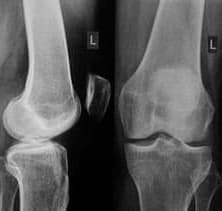

Μια 72χρονη Ελληνίδα είπε πώς κατάφερε να απαλλαγεί από τους πόνους στις αρθρώσεις και να τρέξει έναν μαραθώνιο 42 χιλιομέτρων.
Οι γιατροί ακόμα δεν ξέρουν πώς να θεραπεύσουν τις κατεστραμμένες αρθρώσεις, τα φαρμακεία πωλούν καλά συσκευασμένα φάρμακα με κενές υποσχέσεις για την αποτελεσματικότητά τους, αλλά στην πραγματικότητα θέλουν απλώς να βγάλουν όσο το δυνατόν περισσότερα χρήματα για τις ανάγκες των ατόμων με αναπηρία.
Η Ολίβια Turchi έχει τρέξει 11 μαραθώνιους σε δύο χρόνια και έχει κερδίσει δύο τρόπαια και οκτώ μετάλλια σε διεθνείς αγώνες.
Στα 72 της, η Ολίβια είναι πιο ανθεκτική, δραστήρια και υγιής από πολλούς 40χρονους άνδρες και γυναίκες, αλλά δεν είχε πάντα τόσο εξαιρετική υγεία.
Έχει ζήσει όλη της τη ζωή στην Αθήνα. Στα 40 της άρχισε να υποφέρει από πόνους στις αρθρώσεις. Στα 42 της είχε ήδη αρκετές διαγνώσεις: οστεοχονδρωσία, ισχιαλγία και αρθρίτιδα. Σε ηλικία 68 ετών έμεινε ανάπηρη και διαγνώστηκε με κόξαρθρο της άρθρωσης του ισχίου. Οι αρθρώσεις της είχαν φθαρεί σχεδόν τελείως, κινούνταν με μεγάλη δυσκολία και μόνο με τη βοήθεια ενός μπαστούνι, οπότε ένα χρόνο μετά βρισκόταν σε αναπηρικό καροτσάκι.
Σύμφωνα με τον Παγκόσμιο Οργανισμό Υγείας, οι κατεστραμμένες αρθρώσεις είναι η αιτία για έως και το 91% των διαφόρων ασθενειών, από παθήσεις του γαστρεντερικού σωλήνα μέχρι εγκεφαλικά και καρδιακά επεισόδια.
Η αναπηρική σύνταξη της δεν έφτανε για να αγοράσει ακριβά φάρμακα. Ως εκ τούτου, αποφάσισε να κάνει τα πάντα για να αποκαταστήσει τη λειτουργία των αρθρώσεων και να ανακουφίσει τον πόνο στην πλάτη. Κατά συνέπεια, μετά από 2 χρόνια είχε μια επιτυχημένη διαδικασία αποκατάστασης και στα 70 της δεν ήταν πλέον ανάπηρη. Ο γιατρός που τη θεράπευσε φαινόταν έκπληκτος με το πόσο βελτιώθηκε η υγεία της: «Μια κυρία μπορεί να αθληθεί ή να τρέξει αύριο, θα είναι η νέα πρωταθλήτρια».
Το πιο εκπληκτικό όμως είναι ότι στα 72 της η κυρία Ολίβια άρχισε πραγματικά να τρέχει, έτρεξε τον πιο δύσκολο μαραθώνιο των 42 χιλιομέτρων και κατέκτησε το διεθνές κύπελλο.
Πώς κατάφερε να αποκαταστήσει πλήρως την υγεία των αρθρώσεων της και να κερδίσει το τρόπαιο και τον σεβασμό του ελληνικού λαού στα γεράματά της;
Η Ολίβια Turchi αποκάλυψε το μυστικό της στους αναγνώστες μας.
Ανταποκριτής: Κυρία Ολίβια, το πρώτο ερώτημα είναι πώς να νιώθεις γεμάτος ενέργεια, ζωηρός και υγιής σε μια συγκεκριμένη ηλικία, ακόμα και να κερδίζεις κύπελλα; Ποιο είναι το μυστικό σου;
Για να είμαι ειλικρινής, δεν ήμουν πάντα έτσι. Δούλεψα όλη μου τη ζωή σε μια εταιρεία ρούχων, καθισμένος με λυγισμένη την πλάτη 8 ώρες την ημέρα, επί 25 χρόνια. Στα 42 μου έφτασα στο σημείο να μην μπορώ να τεντωθώ, κατέληξα στο νοσοκομείο, όπου μετά από περισσότερες από 2 εβδομάδες διαγνώστηκα με οστεοχόνδρωση 4ου βαθμού. Μέχρι εκείνη τη στιγμή, είχα ήδη αρθρίτιδα και πόνο στο ισχίο. Σε μόλις ένα χρόνο δεν μπορούσα να περπατήσω χωρίς μπαστούνι, μετά από άλλους τρεις μήνες ήμουν σε αναπηρικό καροτσάκι.
Ο γιατρός μου έγραψε πολλά φάρμακα. Δεν μπορώ καν να θυμηθώ ποιες, ήταν πολλές. Τα χάπια με βοήθησαν μόνο προσωρινά. Μόλις έχασα μια δόση, σχεδόν αμέσως με βασάνιζε ο βασανιστικός πόνος, που μερικές φορές με έβγαζε νοκ άουτ. Από όσο γνωρίζω, τίποτα δεν έχει αλλάξει στη θεραπεία των άρρωστων αρθρώσεων.
Οι γιατροί μέχρι σήμερα δεν γνωρίζουν πώς να αποκαταστήσουν τον κατεστραμμένο οστικό ιστό των αρθρώσεων. Τα φαρμακεία πωλούν όμορφα συσκευασμένα φάρμακα που υπόσχονται πραγματικά θαύματα, αλλά στην πραγματικότητα είναι αναποτελεσματικά και άχρηστα για τα άτομα με αναπηρία.
Εκείνη τη στιγμή δεν μπορούσα πλέον να δουλέψω. Μπορούσα μόνο να ξαπλώσω ή να καθίσω. Πήρα μια χούφτα χάπια, ξοδεύοντας όλα τα χρήματα που κέρδισα σε 25 χρόνια σκληρής δουλειάς σε ένα φαρμακείο.
20 χρόνια αναπηρίας
Έζησα σε αυτή την κατάσταση για σχεδόν 20 χρόνια. Προσπάθησε να φανταστείς τον πόνο μου! Αυτά τα 20 χρόνια, ούτε ένας γιατρός δεν μπορούσε να με βοηθήσει. Όταν έκλεισα τα 70, συνειδητοποίησα ότι είχα τρία-τέσσερα χρόνια ζωής, ίσως και πέντε. Δεν ένιωθα καθόλου καλά. Αν σπάνια ξυπνούσα χωρίς πόνο, ήταν σαν ένα πάρτι για μένα. Αν ξυπνήσω νιώθοντας καλά, χωρίς πόνο, δεν θα εκπλαγώ να ανακαλύψω ότι βρίσκομαι στον παράδεισο.
Μάλλον θα είχα πεθάνει μέχρι τώρα αν δεν ήταν η αγαπημένη μου εγγονή. Ο σύζυγός της εργαζόταν στο Επιστημονικό Κέντρο Ρευματολογίας στην Αθήνα. Μου είπε ότι για να αποκαταστήσω τις κατεστραμμένες αρθρώσεις, θα έπρεπε να ομαλοποιήσω την ισορροπία του αρθρικού υγρού και για αυτό ήταν απαραίτητο να καθαρίσω τη λέμφο. Αν καθάρισα το ζουμί, θα μπορούσα να συνεχίσω να ζω. Μου το εξήγησε με ένα απλό παράδειγμα.
Φανταστείτε τι θα συνέβαινε στο αυτοκίνητό σας αν δεν αλλάζατε λάδι κινητήρα και φίλτρο λαδιού; Σωστά! Το αυτοκίνητό σας θα υποφέρει. Με κατεστραμμένα εξαρτήματα, το μηχάνημα θα καταστεί άχρηστο.
Το ίδιο ισχύει και για το λεμφικό μας σύστημα. Πρέπει να παρέχει θρεπτικά συστατικά σε όλα τα όργανα και να εξαλείφει τα απόβλητα. Οι τοξίνες που συσσωρεύονται στο λεμφικό σύστημα για χρόνια δηλητηριάζουν τον οργανισμό. Και πρώτα από όλα υποφέρουν οι αρθρώσεις και η σπονδυλική στήλη. Επειδή ο χόνδρος είναι πολύ ευαίσθητος στην καθαρότητα του λεμφικού υγρού.
Το μολυσμένο λεμφικό υγρό είναι η αιτία όχι μόνο ασθενειών των αρθρώσεων, αλλά και άνω του 87% των ασθενειών που αναπτύσσονται μετά από 50-60-70 χρόνια.
Μου έδωσε σαφείς οδηγίες:
- Καθαρίστε το λεμφικό σύστημα.
- Αποκατάσταση της ισορροπίας του αρθρικού υγρού.
- Αποκαταστήστε τις ήδη καθαρές και λειτουργικές αρθρώσεις με ασβέστιο και χονδροϊτίνη.
Μόλις 3 εύκολα βήματα
Αφού έλαβα συμβουλές από τον άντρα της ανιψιάς μου, έπαθα σοκ. ΓΙΑΤΙ ΚΑΝΕΝΑΣ ΓΙΑΤΡΟΣ ΔΕΝ ΜΟΥ ΕΙΠΕ ΠΟΛΥ 20 ΧΡΟΝΙΑ!
Υπάρχει λοιπόν συσσώρευση μολυσμένων λεμφικών υγρών. Εάν δεν διορθωθεί έγκαιρα, αυτό μπορεί να οδηγήσει σε σοβαρές ασθένειες και τραυματισμούς στις αρθρώσεις.
Ακολούθησα αμέσως τη συμβουλή που έλαβα. Και ξέρεις τι έγινε; Μετά από 6 μήνες σηκώθηκα από αναπηρικό καροτσάκι, ένα χρόνο μετά συνήλθα πλήρως! Επίσης, με ενθάρρυναν να ασχοληθώ με τον αθλητισμό. Στα 70 μου άρχισα να τρέχω, στα 72 μου έτρεξα τον μεγαλύτερο διεθνή μαραθώνιο 40 χιλιομέτρων και κέρδισα ένα καλό κύπελλο.
Μέχρι πρόσφατα, καθόμουν σε αναπηρικό καροτσάκι και ήμουν στα πρόθυρα του θανάτου, αλλά μετά από μόλις δύο χρόνια, βρέθηκα να στέκομαι με ένα κύπελλο ψηλά, περιτριγυρισμένος από εκατοντάδες θαυμαστές. Είναι θαύμα, έτσι δεν είναι;
Ανταποκριτής: Είναι αλήθεια, η ιστορία σου είναι ένα θαύμα! Κι εγώ τη θαυμάζω. Είναι μια πολύ δυνατή γυναίκα. Γιατί όμως πιστεύετε ότι οι γιατροί κρύβουν την αλήθεια για αυτή τη μέθοδο αποκατάστασης της άρθρωσης και παράτασης ζωής; Είναι αυτό συνωμοσία;
Ποιος νοιάζεται για τους ηλικιωμένους; Οι ηλικιωμένοι είναι απλώς ένα βάρος για την κοινωνία. Δεν είναι σκόπιμο να τους θεραπεύσουμε και να παρατείνουμε τη ζωή τους, γιατί όσο ζούμε τόσο περισσότερο θα πρέπει το κράτος να μας πληρώνει τη σύνταξη. Οι ηλικιωμένοι είναι απλώς έρμα για κάθε οικονομία. Γι' αυτό κανείς δεν σκέφτεται να παρατείνει τη ζωή μας.
Επιπλέον, η θεραπεία σήμερα είναι μια επιχείρηση πολλών δισεκατομμυρίων δολαρίων (ιδιαίτερα, η θεραπεία ασθενειών του μυοσκελετικού συστήματος). Ξόδεψα μια περιουσία σε χάπια και γιατρούς. Φανταστείτε πόσους ασθενείς σαν εμένα, και όλοι ξοδεύουν τεράστια χρηματικά ποσά σε χάπια και γιατρούς. Επομένως, δεν είναι βολικό για τους φαρμακοποιούς να μας περιθάλψουν, γιατί αν θεραπευτούν οι άνθρωποι, δεν θα κερδίζουν πλέον. Είναι πολύ πιο κερδοφόρο να γεμίζετε τον εαυτό σας με αναποτελεσματικά φάρμακα που βοηθούν μόνο για περιορισμένο χρονικό διάστημα.
Θέλουμε να ζήσουμε όσο το δυνατόν περισσότερο, αλλά κανείς άλλος δεν το θέλει, επομένως πρέπει να προσέχουμε τον εαυτό μας. Μην παίρνετε χάπια που έχουν συνταγογραφηθεί από γιατρούς. Αν θέλουμε να ζήσουμε περισσότερο και να απολαύσουμε τη ζωή, υπάρχει μόνο μία λύση.
Ανταποκριτής: Πες μας, πώς ακριβώς κατάφερες να αποκαταστήσεις τις αρθρώσεις σου;
Στην πραγματικότητα, τώρα είναι πολύ πιο εύκολο να επιτευχθεί ένα τέτοιο αποτέλεσμα. Χρειάζονταν μήνες για να συλλέξουν ή να παραγγείλουν ειδικά βότανα, να παρασκευάσουν τσάι και να καθαρίσουν τον χυμό (μου πήρε σχεδόν 6 μήνες για να κάνω τον πρώτο μου καθαρισμό!). Στη συνέχεια, παραγγείλετε ξανά ειδικά φυτά και αποκαταστήστε την αρθρική ισορροπία. Και μόνο μετά από αυτό αρχίστε να παίρνετε ασβέστιο και χονδροϊτίνη. Αυτή η θεραπεία συνήθως διαρκεί περισσότερο από ένα χρόνο.
Τώρα όμως δεν χρειάζεται να τα κάνετε όλα αυτά, αφού η διαδικασία ανάκτησης περιλαμβάνει ήδη όλα τα βήματα. Σε δύο μήνες θα είσαι τόσο καλή όσο καινούργια!
Υπάρχει μια εξαιρετική κρέμα που ήδη συνδυάζει όλα τα στοιχεία για πλήρη αποκατάσταση, ονομάζεται «». Περιέχει μικροθρεπτικά συστατικά για τις τρεις φάσεις αποκατάστασης: καθαρισμό της λέμφου, αρθρική ισορροπία και απορρόφηση ασβεστίου και χονδροϊτίνης. Περιέχει επίσης χλωροφύλλη. Αλλά το πιο σημαντικό είναι ότι οι τρεις φάσεις ξεκινούν ταυτόχρονα και δεν χρειάζονται περισσότερο από δύο έως τρεις μήνες. Αρκεί να το χρησιμοποιείτε δύο φορές την ημέρα.
Σας συμβουλεύω να κάνετε και τα τρία στάδια μία φορά κάθε δύο με τρία χρόνια. Αν το κάνετε αυτό, θα ζήσετε μέχρι τα 80 ή τα 100 ή ίσως και τα 120. Και ξεχάστε τον πόνο στις αρθρώσεις, θα είστε δραστήριοι και χαρούμενοι. Πιστέψτε με, αυτό είναι καλύτερο από το να νιώθεις γέρος που ζει τα τελευταία του χρόνια!
Η μέθοδος του μαραθωνίου συνταξιοδότησης φαίνεται εξαιρετικά λειτουργική και αποτελεσματική. Θα είναι όμως αλήθεια; Πριν δημοσιεύσουμε αυτό το άρθρο για τους αναγνώστες μας, αποφασίσαμε να ρωτήσουμε σχετικά τον διάσημο Έλληνα επιστήμονα, επικεφαλής του Ευρωπαϊκού Κέντρου για την Ανάπτυξη της Βιοτεχνολογίας, Δρ. Silvestro Marinelli.

Ανταποκριτής: Δρ Μαρινέλλη, θα μπορούσατε να επιβεβαιώσετε ότι αυτή η διαδικασία τριών βημάτων αποκαθιστά πραγματικά τις αρθρώσεις;
Ναι, είναι όλα αλήθεια. Ο αγνός χυμός είναι η εγγύηση της υγείας μας. Η απαραίτητη ποσότητα αρθρικού υγρού αποτελεί προστασία από τον πρόωρο εκφυλισμό των αρθρικών δίσκων. Φυσικά, η κ. Turchi περιέγραψε όλες τις διεργασίες που συμβαίνουν στο ανθρώπινο σώμα, κάπως απλοποιημένες, αλλά και πάλι είναι αλήθεια.
Τώρα όλο και περισσότεροι γιατροί λένε ότι ο καθαρισμός και η εξισορρόπηση πρέπει να είναι υποχρεωτικοί για όλους τους ανθρώπους άνω των 40 ετών. Και αν ένα άτομο έχει σωματικά σκληρή δουλειά, τότε θα πρέπει να κάνει αυτή τη διαδικασία νωρίτερα. Κάνοντας αυτή τη διαδικασία μετά από 30 χρόνια, θα προστατευτείτε από ασθένειες των αρθρώσεων για τα επόμενα 10 χρόνια.
Ανταποκριτής: Θα μπορούσατε να μας πείτε περισσότερα για την κρέμα ; Τι είναι αυτό?
Εδώ είναι το αυθεντικό προϊόν που έσωσε την Ολίβια
Η είναι μια κρέμα που δημιουργήθηκε στην Ελλάδα. Σήμερα θεωρείται το πιο αποτελεσματικό προϊόν για τη θεραπεία και την αποκατάσταση των αρθρώσεων.
Το περιέχει δύο κύρια δραστικά συστατικά: την άλφα τοκοφερόλη για τον καθαρισμό της λέμφου και την υποπλασία για την εξισορρόπηση του αρθρικού υγρού. Επιπλέον, η κρέμα περιέχει μέταλλα και πολυακόρεστα λιπαρά οξέα που είναι σημαντικά για την αναγέννηση και την ενδυνάμωση των αρθρώσεων.
ΠΑΡΑΓΓΕΙΛΤΕ Κρέμα ΕΚΠΤΩΣΗ ΕΩΣ 50% >>>
Χάρη στην επιστημονική του φόρμουλα, το είναι αποτελεσματικό στη θεραπεία διαφόρων παθήσεων των αρθρώσεων:
- αρθρίτιδα;
- αρθροπάθεια;
- αρθρίτιδα;
- οστεοαρθρίτιδα;
- οστεοαρθρίτιδα;
- θυλακίτιδα;
- οστεοχονδρωσις;
- οστεοπόρωση;
- μυοτενόντια παθολογία;
- συνδεσμίτης.
Το ξεκινά τη φυσική διαδικασία ανάκτησης, ο ιστός του χόνδρου δέχεται νέα κύτταρα και αρχίζει να ανανεώνεται, υποστηρίζοντας τη διαδικασία αναγέννησης για αρκετά χρόνια.
Το βοηθά όλους, ειδικά τους ηλικιωμένους με εξασθενημένο ανοσοποιητικό σύστημα. Έχει επίσης θετική επίδραση στην κατάσταση του σώματος στο σύνολό του, και συγκεκριμένα:
Αγγειακή ανακατασκευή
Διαλύει τις τοξίνες και καθαρίζει τα αιμοφόρα αγγεία, αποκαθιστά τα μικρά τριχοειδή αγγεία. Γι' αυτό δεν θα υποφέρετε πια από πόνους στις αρθρώσεις, ξεχάστε την αδυναμία και την υπνηλία, θα απολαύσετε την ταχύτερη επούλωση των πληγών. Θα έχετε περισσότερη ενέργεια. Οι άνθρωποι συχνά αισθάνονται σαν να κάνουν δουλειές του σπιτιού ή να ασχολούνται με την κηπουρική.
Βελτιώνει την κατάσταση των αρθρώσεων, των οστών και των μυών
Βοηθά στην αποκατάσταση ακόμη και σοβαρά κατεστραμμένων αρθρώσεων. Το ίδιο ισχύει και για τα οστά, καθώς η φυσική τους σύσταση αποκαθίσταται και ενισχύεται. Όλοι οι ιστοί ενημερώνονται, η ελαστικότητα των μυών βελτιώνεται.
Ξυπνήστε πιο εύκολα
Ξυπνάτε νωρίς το πρωί και σηκώνεστε πιο εύκολα από το κρεβάτι χωρίς να χρειάζεται να τεντώσετε και να κάνετε μασάζ στα μουδιασμένα πόδια, τη σπονδυλική στήλη και τον λαιμό σας. Τώρα η ζωή σας είναι γεμάτη ενέργεια.
Μεγάλη διάθεση και γενική ευεξία
Πρωί και όλη την ημέρα. Κοιμάσαι καλά, ξεκουράζεσαι πραγματικά. Νιώθεις νεότερος.
Ηρωική Αντίσταση
Όπου κι αν πάτε, δεν θα χρειάζεται να ανησυχείτε για τα πόδια σας: το περπάτημα δεν θα είναι δυσάρεστη εμπειρία για εσάς, μπορείτε να περπατάτε όλη μέρα και τα πόδια σας δεν θα κουράζονται. Τα παπούτσια και οι κάλτσες σας δεν θα αφήνουν πλέον σημάδια στα πρησμένα πόδια που μοιάζουν με κορδόνια στα λουκάνικα.
Απόλυτη ηρεμία
Νιώθετε ήρεμοι και χαλαροί. Δεν υποφέρετε πλέον από συνεχή πόνο που σας ενοχλεί και σας εμποδίζει να εστιάσετε σε οτιδήποτε άλλο. Όταν δεν αισθάνεστε πόνο, ξαφνικά αρχίζετε να παρατηρείτε οικεία πράγματα, ήχους και μυρωδιές που έχετε ξεχάσει.
Πραγματοποιήσαμε μια κλινική μελέτη στο Ευρωπαϊκό Κέντρο για την Ανάπτυξη της Έρευνας της Βιοτεχνολογίας. Θέλω να σας δείξω τα αποτελέσματα αυτής της μελέτης. Συνολικά συμμετείχαν 270 εθελοντές.
- Η λέμφος καθαρίστηκε από τοξίνες και απόβλητα: 96% των ατόμων.
- Το αρθρικό υγρό ανακτήθηκε πλήρως στην ποσότητα που απαιτείται για την καλή λειτουργία του μυοσκελετικού συστήματος: στο 98% των ατόμων.
- Οι αρθρικοί δίσκοι επέστρεψαν στο αρχικό τους σχήμα: 94% των θεμάτων.
- Ο ρυθμός ανάπτυξης του χόνδρινου ιστού αυξήθηκε: στο 74% των υποκειμένων.
- Η αποτελεσματικότητα της θεραπείας των χρόνιων ασθενειών είναι πολύ υψηλή - 99% των υποκειμένων.
- Συνέπειες του υποσιτισμού. Πρέπει να χρησιμοποιήσετε το "".
- Αναγέννηση του αρθρικού χόνδρου μετά από 2 εβδομάδες εφαρμογής του "".
- Αναγέννηση του αρθρικού χόνδρου μετά από 3 εβδομάδες εφαρμογής του "".
- Υγιής άρθρωση μετά από θεραπεία .
Η παρακάτω ακτινογραφία δείχνει την αναγέννηση της άρθρωσης του γόνατος:
Χάρη στην κρέμα , μπορείτε να θεραπεύσετε τις ασθένειές σας στο σπίτι σε ένα ή δύο μήνες. Το "" δεν δροσίζει και δεν αναισθητοποιεί, αλλά "ξανεκκινεί" το σώμα σε κυτταρικό επίπεδο, εξαλείφει την ίδια την αιτία του πόνου και βοηθά στην αποκατάσταση της υγείας των αρθρώσεων.
Εκτός από την άλφα-τοκοφερόλη και την υποπλασία, το περιέχει επίσης περισσότερα από 60 ενεργά συστατικά, συμπεριλαμβανομένων 28 εκχυλισμάτων βοτάνων από όλο τον κόσμο, με ευεργετικά αποτελέσματα στις αρθρώσεις και τη σπονδυλική στήλη. Δεν θα τα αναφέρω όλα, απλά θα πω ότι το σύμπλεγμα στοχεύει στην πλήρη θεραπεία και βελτίωση του μυοσκελετικού συστήματος.
Σπουδαίος! Αποδείχθηκε ότι το φθινόπωρο είναι η καλύτερη εποχή για να ξεκινήσετε τη θεραπεία παθήσεων των αρθρώσεων. Με τη μείωση της μέσης θερμοκρασίας, ο μεταβολισμός επιταχύνεται, η κυκλοφορία του αίματος στο σώμα βελτιώνεται, η παροχή αίματος στα εσωτερικά όργανα αυξάνεται, ενισχύοντας έτσι την επίδραση του προϊόντος. Η θεραπεία είναι 67% πιο αποτελεσματική σε σχέση με άλλες εποχές του χρόνου.
Ανταποκριτής: Πόσο κοστίζει το και πού μπορώ να το αγοράσω;
Για να επιστήσουμε την προσοχή του κόσμου στο "", ξεκινήσαμε μια ειδική προσφορά από τις έως τις για να σας δώσουμε την ευκαιρία να το παραγγείλετε με έκπτωση. Πιστεύω ότι το εφέ από στόμα σε στόμα θα λειτουργήσει και κάθε άτομο, αφού πετύχει ένα εξαιρετικό αποτέλεσμα, θα συστήσει το προϊόν σε φίλους και συγγενείς.

Σχόλια
Ντάριο Α. ΠΑΤΡΑ
Έχω διαβάσει το άρθρο. Έχω τα ίδια προβλήματα που έπρεπε να αντιμετωπίσει η κυρία. Κανένας γιατρός δεν μου είπε ποτέ για αυτή τη μέθοδο θεραπείας των αρθρώσεων. Ευτυχώς, δεν χρειάζεται να χάσω άλλο χρόνο και μπορώ να δοκιμάσω το αυτή τη στιγμή. Έχω ήδη παραγγείλει, σίγουρα θα δοκιμάσω!

Δρ Μαρινέλλη ΑΘΗΝΑ
Ντάριο, κανένας γιατρός δεν θα σας πει για αυτό το προϊόν. Δυστυχώς, γιατροί και φαρμακευτικές εταιρείες βρίσκονται σε στενή επαφή και δεν θέλουν να χάνουν την ευκαιρία να βγάλουν χρήματα.
Πάολο Ντε Ρόζα ΗΡΑΚΛΕΙΟΥ
Παρήγγειλα κι εγώ. Έχω ακούσει για τον στο παρελθόν. Πολλοί μιλούν καλά για αυτό, αλλά δεν ήξερα από πού να το αγοράσω. Τώρα ξέρω, και υπάρχει ακόμη και έκπτωση!
Τζουλιάνα Φ. ΛΑΡΗΣ
Σας ευχαριστώ!
Νικολέττα Δ. ΑΘΗΝΑ
Η ειδική προσφορά είναι υπέροχη! Δεν έχω μεγάλα προβλήματα και δεν είμαι σε αναπηρικό καροτσάκι, αλλά η πλάτη μου πονάει για πάνω από 10 χρόνια. Και κανένας γιατρός δεν μπορούσε να με βοηθήσει! Πήρα πολλά χάπια, αλλά ήταν όλα άχρηστα! Αγόρασα το και μετά από δύο εβδομάδες ο πόνος είχε φύγει! Είναι θαύμα! Ευχαριστώ και πάλι για αυτήν την ανακάλυψη!
Δρ Μαρινέλλη ΑΘΗΝΑ
Νικολέττα, οι περισσότεροι πιστεύουν ότι ο πόνος στην πλάτη δεν είναι σοβαρό πρόβλημα. Ο πόνος, από την άλλη, είναι σύμπτωμα μυοσκελετικών διαταραχών. Για να μην επιδεινωθεί η κατάσταση, συνιστάται η έναρξη της θεραπείας στα αρχικά στάδια.
Νικολέττα Δ. ΑΘΗΝΑ
Γιατρός Μαρινέλλη. , συμφωνώ απόλυτα μαζί σου.Δυστυχώς, ο ρυθμός της ζωής κάνει τους ανθρώπους να μην παρατηρούν αυτά τα συμπτώματα, να τα θυμούνται μόνο σε μεταγενέστερα στάδια.
Γιάννη Συμεώνη Χαλκίδας
Το χρησιμοποιώ εδώ και 2 μήνες. Ο πόνος στα γόνατά μου έχει φύγει. Νιώθω πολύ καλύτερα, άρχισα να τρέχω σήμερα το πρωί. Παρήγγειλα άλλα δύο πακέτα. Συνιστάται για όλους!
Λουίζ Π. ΤΡΙΚΑΛΑ
Γιάννη Συμεώνη, παλεύω και με πόνο στο γόνατο, πρέπει να παραγγείλω!
Αντριάνο Δ. ΚΑΛΑΜΑΤΑ
Ο γείτονάς μου ήταν ευχαριστημένος με αυτό το συμπλήρωμα. Ο γιατρός του τον συμβούλεψε να επωφεληθεί από την προσφορά σας και να το αγοράσει σε μειωμένη τιμή.
Δρ Μαρινέλλη ΑΘΗΝΑ
Χαίρομαι που γνωρίζω ότι υπάρχουν γιατροί που βάζουν πρώτα την ανάρρωση του ασθενούς, και δεν εμπλουτίζονται με άχρηστα φάρμακα!
Λουάνα Βιζίνι ΘΕΣΣΑΛΟΝΙΚΗ
Η σύνθεση του είναι εντυπωσιακή! Αυτή είναι μια επαναστατική εφεύρεση που είναι φθηνή.
Καρμέλα Μ. ΠΑΤΡΑ
Κρίμα που είναι τόσο δύσκολο να αγοράσεις ένα τόσο καλό προϊόν. Τι πιστεύουν οι γιατροί μας;
Ολίβια Τούρτσι ΑΘΗΝΑ
Αυτό το προϊόν θα πωλείται επίσης διαδικτυακά. Αλλά ένας εκπρόσωπος της εταιρείας με προειδοποίησε ότι η τιμή θα αυξηθεί στο μέλλον επειδή το κόστος αποστολής ενός από τα συστατικά θα αυξηθεί.
Δρ Μαρινέλλη ΑΘΗΝΑ
Η Καρμέλα, οι γιατροί και οι φαρμακευτικές εταιρείες βρίσκονται σε στενή επαφή, αυτό είναι όλο.
Μανουέλα Σ. ΤΡΙΚΑΛΑ
Στα 72 της κατάφερε να τρέξει 42 χλμ;;; Πραγματικά? Είμαι 40 και δεν μπορώ να τρέξω ούτε ένα μίλι! παραγγέλνω τώρα!
Cybil ΞΑΝΤΗ
Μανουέλα. Εμπνεύστηκα κι εμένα από αυτή την ιστορία! Δυστυχώς, ακόμη και οι νέοι κάνουν λιγότερο αθλητισμό από την Ολίβια. Νομίζω ότι το πρόβλημα είναι ότι δίνουμε πολύ λίγη προσοχή στις αρθρώσεις.
Ολίβια Τούρτσι ΑΘΗΝΑ
Μανουέλα, ποτέ δεν είναι αργά για να αρχίσεις να ζεις μια πιο υγιεινή και δραστήρια ζωή! Και οι υγιείς αρθρώσεις θα βοηθήσουν!
Λιλιάνα Ρομπέρτη ΘΕΣΣΑΛΟΝΙΚΗ
Τα οστά και οι αρθρώσεις μας είναι η βάση του σώματός μας, της ζωής μας. Εάν ασχολείστε με την πρόληψη, μπορείτε να ζήσετε μέχρι 100 ή και 120 χρόνια. Ευχαριστούμε για την ανακάλυψή σας!
Ολίβια Τούρτσι ΑΘΗΝΑ
Λιλιάνα, είναι ωραίο που υπάρχουν άνθρωποι που σκέφτονται το ίδιο με εμένα! Πραγματικά έχεις δίκιο!
Ισαβέλλα Σ. ΛΑΜΙΑ
Είμαι περίεργος να μάθω τι είναι αυτό το προϊόν, πρέπει να το δοκιμάσω!
Daniela Emiliano ΡΟΔΟΣ
Κάνω αυτή τη μέθοδο πρόληψης για πάνω από 15 χρόνια, σήμερα ανακάλυψα ότι δημιουργήθηκε μια ειδική κρέμα για αυτό. Μπορώ να επιβεβαιώσω ότι όντως λειτουργεί.
Ελίζα ΧΙΟΣ
Σας ευχαριστώ! παρήγγειλα αυτό!
Σοφία ΘΕΣΣΑΛΟΝΙΚΗ
Χρησιμοποιούσα το εδώ και 5 ημέρες, επιτέλους ξύπνησα σήμερα το πρωί χωρίς πόνο. Ελπίζω πραγματικά ότι θα με βοηθήσει να λύσω τα προβλήματά μου με τον πόνο στις αρθρώσεις! Σας ευχαριστώ!
Ολίβια Τούρτσι ΑΘΗΝΑ
Γεια σου Σοφία, χαίρομαι που πήρες τη συμβουλή μου. Σας εύχομαι καλή υγεία!